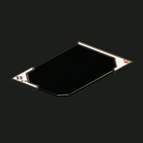

Mecánicas
Registros de lectura
Los registros de lectura son tablets con texto: notas de campo, libros de cuentas, memos y telemetría que dejaron VDI y los Castoffs.
Cómo funciona
- Clic derecho sobre un registro en tu inventario o en una bolsa → READ, o doble clic. La tablet se abre en el medio de la pantalla y escribe su texto; ES / EN cambia el idioma cuando el registro tiene los dos.
- Leer no gasta nada y el registro sigue siendo un objeto común (uno por celda, 0,3 kg): podés tirarlo, guardarlo en el depósito o llevarlo.
- No te podés mover mientras el lector está abierto; Esc o CLOSE lo cierran. El mundo sigue andando.
- Una misión puede pedirte que leas un registro (objetivo "read item").
Dónde se encuentran
La mayoría está en Document Cases: contenedores fijos con un brillo cian tenue. Cada operador encuentra su propia copia, y un estuche está vacío para vos si ya llevás su registro. El resto está en los cofres de los jefes, que se abren una vez por operador.
| Objeto | Título en la tablet | Se encuentra en | Idiomas |
|---|---|---|---|
| WHAT WE TOOK · WHAT IT COST | Document Case · The Scarp | EN · ES | |
| VANTAGE DEEP INDUSTRIES — INTERNAL · CLASSIFIED | Document Case · C-3 · Floor 3 | EN · ES | |
| VANTAGE DEEP INDUSTRIES · SHAFT 3 · SHIFT LOG | Document Case · The Scarp | EN · ES | |
| VDI Telemetry · Pump Works 7 | VANTAGE DEEP INDUSTRIES — PUMP WORKS 7 · AUTOMATED TELEMETRY | Switchyard Cache · The Pump Works · Switchyard | EN · ES |
 Warlord's Orders | STANDING ORDERS · THE HIDEOUT | Warlord's Strongbox · Castoff Hideout · Floor 4 | EN · ES |